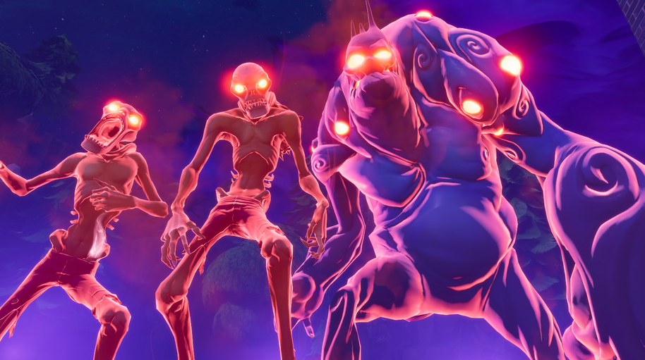

Some of the best games are made on smaller budgets
A total of 68 games recognized
By Dan Griliopoulos, Feb 10, 2018
As time marches on, and gaming faces more advancements in technology and as an art form, the standards for what makes the best indie game evolves. One of the most exciting aspects of indie games, especially in 2018,is that unlike major game publishers like Microsoft and EA, who need to subsidize their releases with monthly subscriptions and microtransactions – the best indie games don’t cost very much to begin with, so you end up with a pure portrait of the developers artistic vision, especially if you have one of the best gaming PCs.
And that’s not to say that the best indie games you can buy in 2018 aren’t every bit as stimulating as the newest Assassin’s Creed or Call of Duty. They can at times blow the latest AAA games out of the water due to the fact that they’re less repetitive, and don’t need to rely on tired tropes and cliches to move millions of units.
Described as a cross between Pokémon, Harvest Moon and Animal Crossing, we couldn’t help ourselves but to recommend that you keep Ooblets in the back of your mind over the next several months. This indie game was developed by first-time studio Glumberland, whose art style curiously reminds us of Adventure Time. However, the game itself revolves around collecting creatures called ooblets in a town called Oob.
Jonathan Blow's masterpiece Braid first appears to be a simple pastiche of Super Mario Bros, with a middle-aged curmudgeon replacing the titular plumber but still seeking to rescue a princess.
But as you spend time with it, it reveals more of itself, moving from a series of time-bending puzzles to quiet reflective texts – which doesn't stop it being the smartest puzzle game until SpaceChem. Blow himself has hinted that the ultimate story might be something to do with the atomic bomb.
First released as PC freeware by Japanese designer Daisuke "Pixel" Amaya back in 2004 after five years of 100% solo development, Cave Story predates the recent indie renaissance by a few years. Because of when and how it was first released, it's often forgotten in discussions of indie gaming.
But this classic deserves to be on every best-of list for its loving homage to the classic action platforming games of the Super Nintendo era, its incredible music and its incredibly vibrant world. Oh, and don't forget the hugely intuitive controls, gobs of secrets and weapons that are entirely too fun to use. If you've yet to enjoy this one, just put it on your backlog already.
Rust is one of the more successful indie titles of recent times. By the end of 2015 it had sold more than 3 million copies, which isn't too shabby considering it isn't even finished — the game has been on Steam's Early Access scheme since launching in December 2013.
Still, it seems people can't get enough of the Day Z-inspired survival sim. It sees you use your wits and bearings to survive its harsh open world, starting off with nothing but a rock. After gathering resources needed to build a house and weapons to fend off attackers (other online players, in other words), Rust gradually becomes more intense as you defend your growing base — or attempt to breach others'.
Civilization 6: Rise and Fall Makes it Fun to Fail

Sometimes, it's good to be bad...
By T.J. Hafer, Jan 22, 20188
It is a dark time for the Cree Nation. Having failed to achieve greatness during the Ancient Era, we enter the Classical not with dreams of grand temples and expanded borders, but with the grim knowledge that all we can do is gather around the hearth fire and ride out the coming storm.....more >
Horizon Zero Dawn leads 2018 DICE Awards finalists

A total of 68 games recognized
By Samit Sarkar Jan 15, 2018
The nominees for this year’s DICE Awards are in, and the top honoree by far is Guerrilla Games’ Horizon Zero Dawn — the sci-fi action/adventure game received nods in 10 categories.....more >